Another 2 billion people rely on biomass or kerosene for cooking, lighting, and heating. The "energy poor" must spend a disproportionate amount of time and money (10-30% of household income) on sub-standard cooking and lighting fuels. They may walk for miles to find the nearest kerosene supplier or scavenge their surroundings for wood, crops, or dung to burn. All while subjecting themselves to open flames that pose health hazards to those around them. Altogether, the smoke from these cooking and lighting fuel sources has been linked to over 1.5 million deaths each year. That's more than malaria.
This has enormous consequences for society. A community without electricity cannot run computing services, refrigerate medicines, power industrial machinery, or access information from the internet. The digital divide only exacerbates disparities. While there is still no one-size-fits-all resource that can universally meet the world’s energy needs, there is a particular opportunity for solar-based solutions.
Take, for example, this map of the world at night. Due to light pollution, we can get a sense for which regions are electrified and which are not.
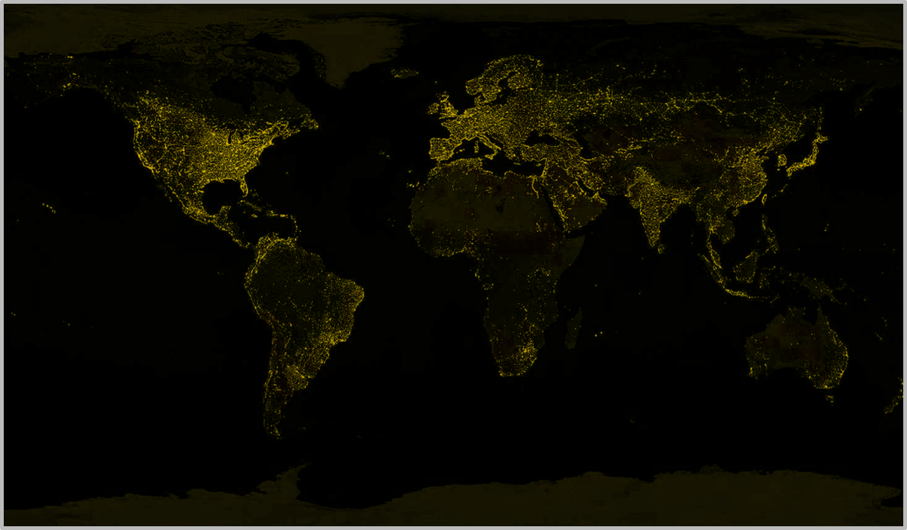But what about those areas that are dark? Does this mean that these are sparsely populated regions? Hardly. Just check out this map of population density in Africa, overlaid on top of the map of electrification.
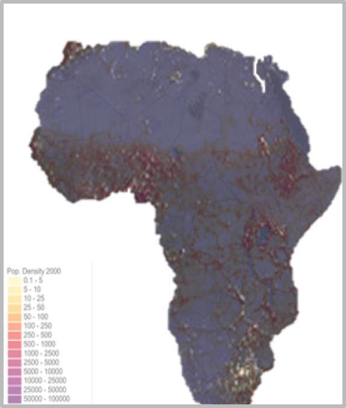So what is the role of solar? Well, if we overlay a map of solar irradiation on top of the first maps of energy density, we can see that solar energy has a real chance to make a difference.
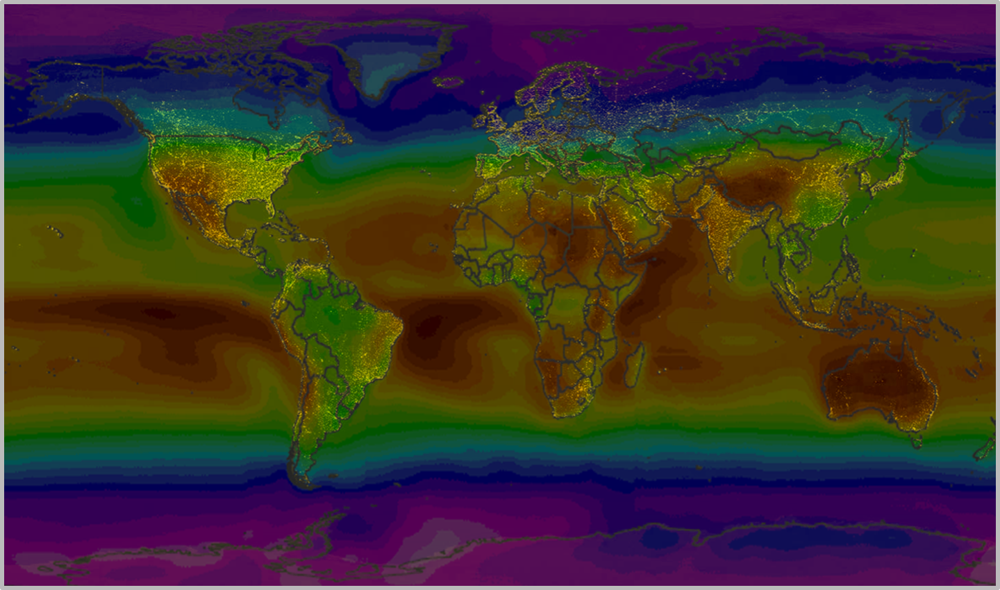In partnership with Princeton University's Woodrow Wilson School of Public Policy, I spent a year conducting research on the different factors that affect the adoption of solar technology - in this case, solar-powered lanterns - in a rural community in Kenya.
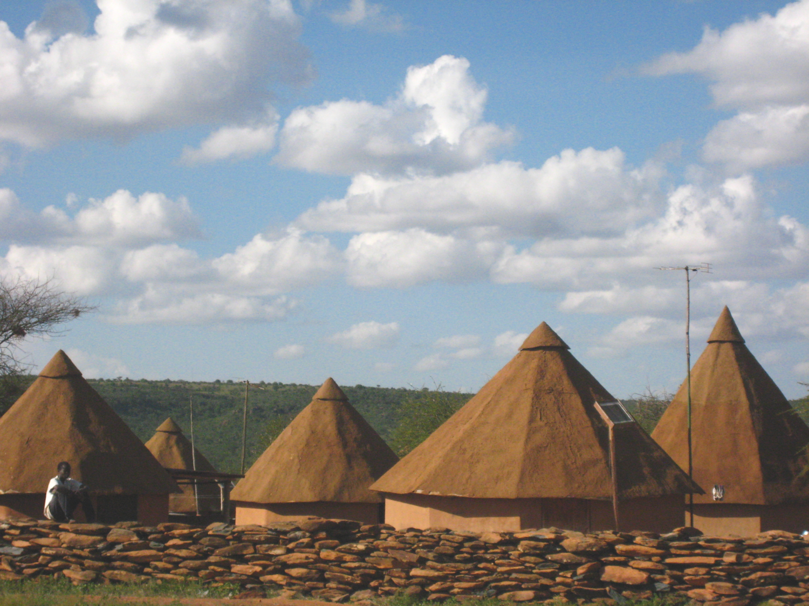With the help of some fantastic translators, I administered a household-level survey in January 2010 to the 52 families in a staff village at the Mpala Research Center. These households were a bit unique in that at least one member had to work full-time at the Center. But it still took over an hour to drive to the nearest town over rugged and unpaved roads, meaning that they shared many of the same challenges as other remote communities in the developing world.
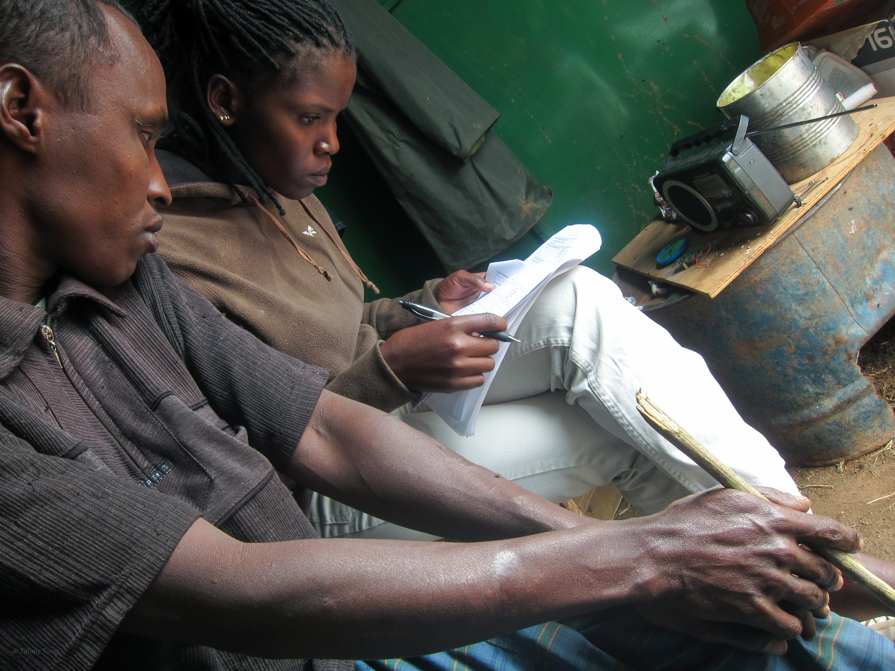 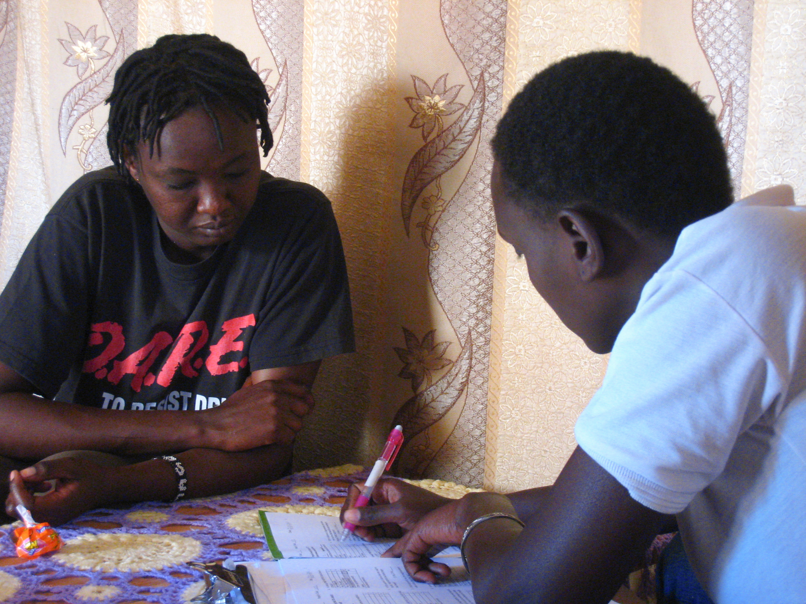The average wage was roughly $4/day and the majority of villagers relied on hurricane-style kerosene lanterns, often spending $5-6 on kerosene for lighting and cooking every month. The village is completely disconnected from the national energy grid, though a handful of households were able to invest in solar panels to power radios, TVs, and the like. The rest relied on 12V car batteries, if anything, which needed to be charged by third-party generators a few times a week.
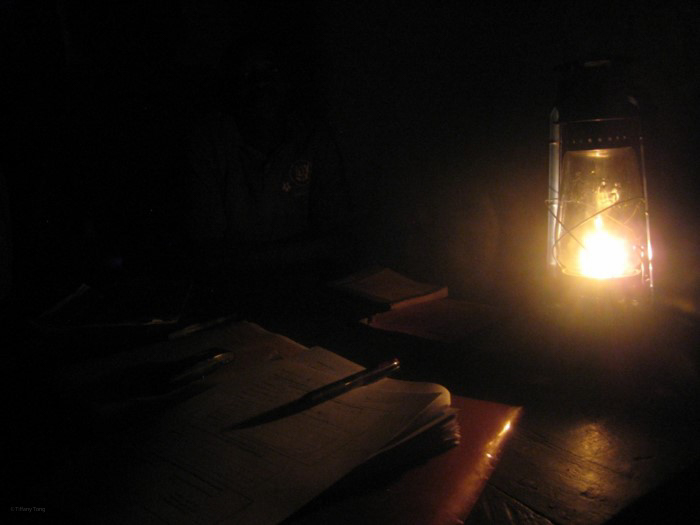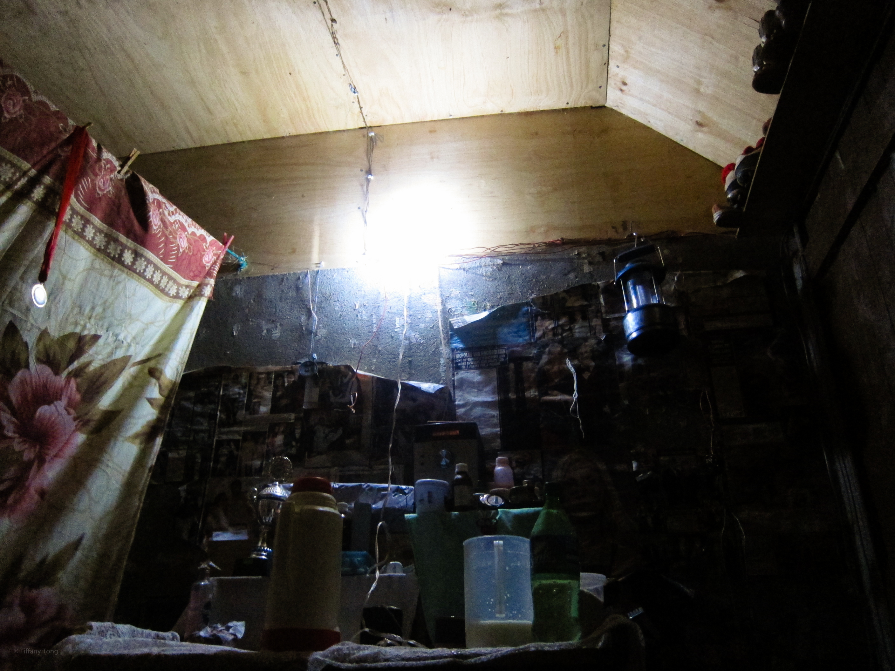 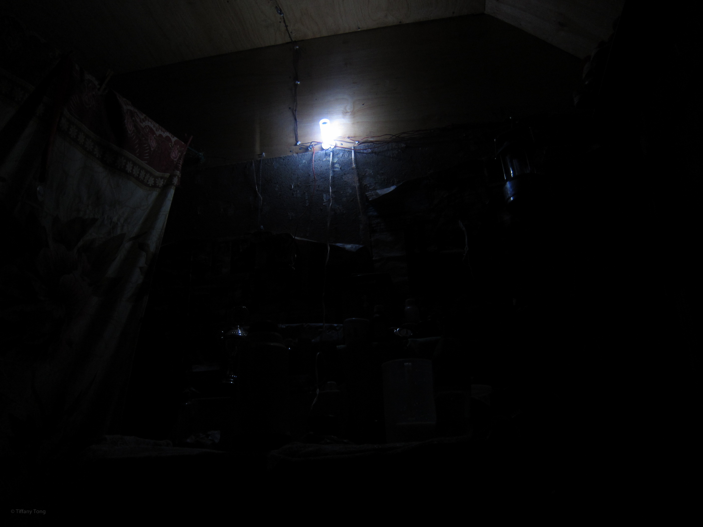
Before leaving the village, I introduced a solar lantern that was built in Shanghai, China by Roy Solar. These lanterns could power a 28-pc LED lantern for 6-12 hours on a single 10 hour charge using either a solar panel or DC charger. The lanterns also included an adapter for mobile phone batteries.
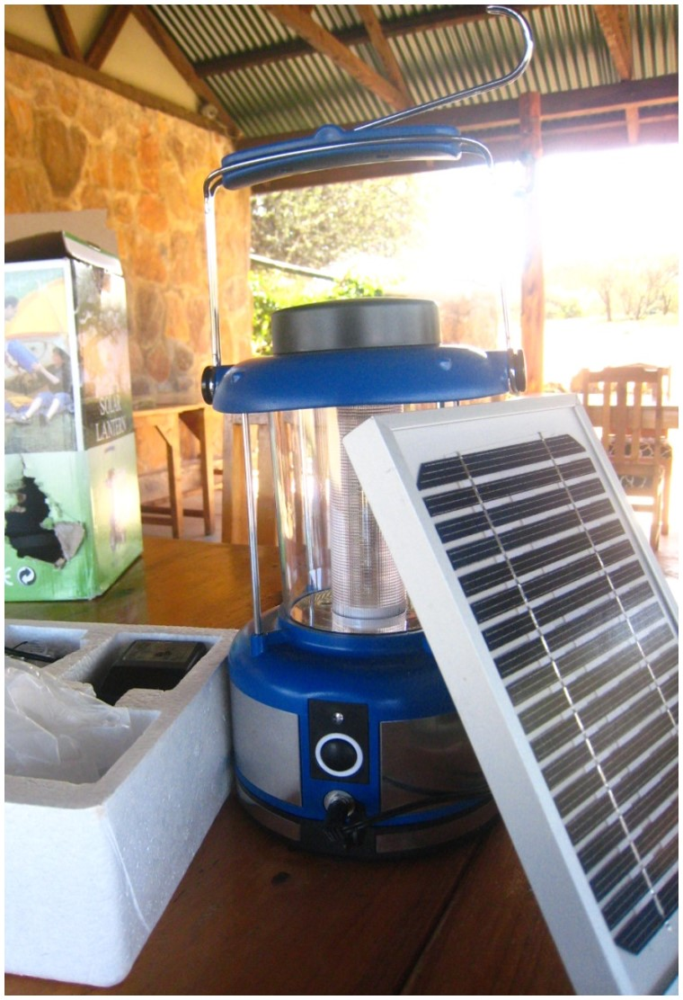After teaching the community about these lanterns, each household had the option of purchasing the lanterns, at cost ($52). Within one month, our entire initial order of 100 lanterns had been sold to the community and members of surrounding villages. With the re-couped costs, we were then able to place a second order for lanterns to meet the growing demand as their reputation spread.
In January 2011, I returned to Mpala to conduct a follow-up survey. I discovered that the lanterns had gone through quite a bit of stress and were not holding up as well as we had hoped. Fortunately, we were able to supply a limited number of spare parts (purchased in advance at the community's request) and train several members of the community to fix the lanterns accordingly.

Despite the villagers' frustrations with the durability of the lanterns, the overall impact was quite positive. The majority of respondents indicated that they were happy with their purchases and many were very aware of the economic and health benefits of the lanterns to their families. Many requested a second lantern and our second order of 100 lanterns sold out while I was there.
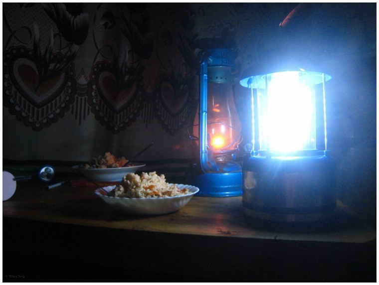Ultimately, we calculated that the lanterns had a 96% adoption rate in the community, leading to a 15% drop in annual lighting-related expenditures - including a 71% drop in kerosene expenditures alone. Financing was cited as crucial to enabling technology adoption in the community, but breakage was a very real issue due to the potent combination of environmental stress and poor quality control. We were determined to develop a sustainable model to transfer the purchasing ability to the local community and eliminate me as the 'middle-man.' Unfortunately, however, the project funding ran out before the new purchasing channels could be adopted.